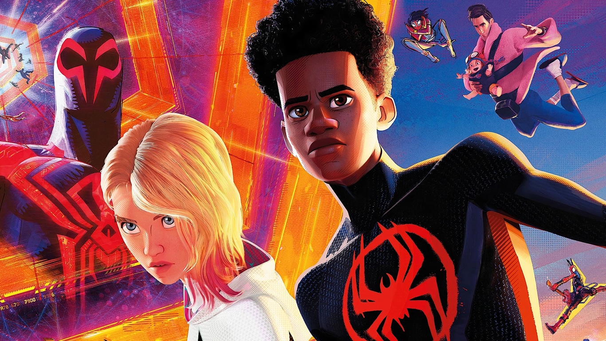

About Miles
Miles Morales is a teenager from Brooklyn who was bitten by a Genetically Altered Spider and became Earth-1610's Spider-Man following the supposed death of that reality's Peter Parker.
Miles and his friends
Miles' characteristics
- He's is still trying to figure out exactly who he is
- He's is warm, personable, and easy to like
- He mostly just wants to be a normal kid, not someone who stands out in a crowd
Miles' Friends
Miles demonstrates a deep love for his friends. He forms a particularly strong friendship with Gwen Stacy. Click on the links above to read more about them: